Kemisk ordbog
Opslagsord står med blåt. Ord skrevet med kursiv henviser til andre opslag.
addition: En kemisk reaktion, hvor to eller flere molekyler går sammen til et større molekyle. Eks.: C2H4 + Br2 → C2H4Br2 (ethen og dibrom adderes (”lægges sammen”) og giver 1,2-dibromethan).
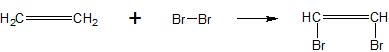
alkan: Et organisk stof der er opbygget udelukkende af hydrogen (H) og carbon (C) og som kun indeholder enkeltbindinger.
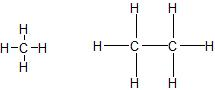
alken: Et organisk stof der er opbygget udelukkende af hydrogen (H) og carbon (C) og som indeholder mindst en dobbeltbinding.
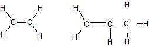
alkyn: Et organisk stof der er opbygget udelukkende af hydrogen (H) og carbon (C) og som indeholder mindst en trippelbinding.
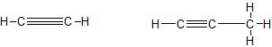
alkohol: Et organisk stof der indeholder mindst én hydroxygruppe (OH). Det mest kendte alkohol er ethanol (der i daglig tale blot kaldes alkohol!) Alkoholers navne ender på -ol. Alkoholer har generelt høje kogepunkter og er blandbare med vand.
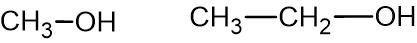
atom: Alt stof består af små partikler som vi kalder atomer. Der findes 118 forskellige slags atomer, det periodiske system er en oversigt over dem. Et atom er opbygget af tre slags elementarpartikler, protoner, neutroner og elektroner. Protoner er positive, neutroner er neutrale og elektroner er negative. Protoner og neutroner findes i atomers kerne og kaldes derfor kernepartikler eller nukleoner. Uden om kernen befinder elektronerne sig i en rækker baner (kaldet skaller).
atomsymbol: For hvert atom (og dermed hvert grundstof) findes der et atomsymbol der består af et stort bogstav eller et stort bogstav efterfulgt af et lille. Eksempelvis H for hydrogen og He for helium.
base: Et stof der kan optage en hydrogenion (H+). Et eksempel er ammoniak (NH3) der ved reaktion med vand optager en hydrogenion: NH3 + H2O → NH4+ + OH-.
basisk opløsning: En opløsning af base i vand. pH-værdien er større end 7. Koncentrationen af hydroxidioner (OH-) er høj, koncentrationen af oxoniumioner (H3O+) er lav.
binding: Mellem atomerne i et molekyle eller en ionforbindelse, dannes der bindinger. Der molekyle eller en ionforbindelse, dannes der bindinger. Der findes to typer bindinger, elektronparbinding (mellem to ikkemetaller) og ionbinding (mellem metal og ikkemetal).
blanding: Et blanding er et stof hvor de mindste dele ikke er ens. Et eksempel kunne være almindelig atmosfærisk luft. Denne består primært af molekyler af dioxygen og dinitrogen. Dioxygen- og dinitrogenmolekyler er ikke ens, og atmosfærisk luft er dermed en blanding. Se også rent stof.
carbonhydrid: Et organisk stof der udelukkende består af carbon (C) og hydrogen (H). Kan deles op i alifatiske carbonhydrider (kædeformede) og cykliske carbonhydrider (ringformede).
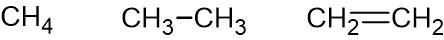
carboxylsyre: Et organisk stof med den generelle struktur der er vist til venstre på figuren. R er en vilkårlig gruppe der fx kan være H, CH3- eller CH3CH2-.
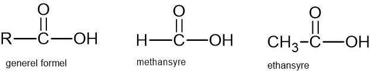
destillation: En metode til adskillelse af væsker med forskellige kogepunkter. Adskillelsen foregår ved at opvarme blandingen i en beholder indtil stofferne fordamper. Dampen afkøles til fortætning, og kondensatet (fortættet væske) opsamles i en separat beholder. Kondensatet vil have en højere andel af stoffet med det laveste kogepunkt end den oprindelige blanding.

dipol: Et molekyle der har en ujævn fordeling af elektroner, således at molekylet får en positiv og en negativ ende. Den ujævne fordeling af elektroner er en følge af atomernes forskellige elektronegativiteter. Et atom med høj elektronegativitet trækker kraftigt i de fælles elektroner i en elektronparbinding og bliver (svagt) negativt, et atom med lavere elektronegativitet trækker svagere i de fælles elektroner og bliver (svagt) positivt.
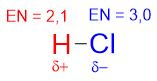
elektron: En af de tre elementarpartikler atomer er opbygget af. Elektronen har negativ ladning og har en meget lille masse (ca. en halv promille af massen af et hydrogenatom). Den bevæger sig i en bane rundt om atomets kerne.
elektronparbinding (el. kovalent binding): En binding mellem to atomer (ikkemetaller) i et molekyle. Bindingen består af et eletronpar. Elektronerne fordeles omkring atomerne på en sådan en måde, at hvert atom får otte elektroner omkring sig i yderste skal (oktetreglen).
elektronprikformel: En formel der viser elektronerne i den yderste skal rundt om et atom. I den yderste skal kan der højst være 8 elektroner. De fire første elektroner tegnes enkeltvis (i hvert ”verdenshjørne”), derefter dannes der par. De uparrede elektroner danner bindinger til andre atomer. De parrede elektroner danner ikke bindinger, og kaldes for ledige elektronpar, ikke-bindende elektronpar eller lone-pair.
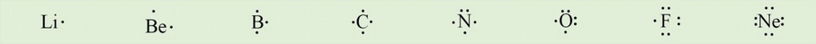
elektronegativitet: En egenskab ved et atom, der fortæller om atomets evne til at tiltrække elektroner. Angives med et tal mellem 0 og 4. Jo større tal, des større er evnen til at tiltrække elektroner. Se også dipol, polær og upolær.
emulgator: Et stof der kan stabilisere en emulsion. Stoffets molekyler har en polær og en upolær ende. De to ender tiltrækkes af hver sin af emulsionens faser og ”tøjrer” de to til hinanden.
emulsion: Et blanding hvor en væske er fordelt i en anden væske som små dråber, fx oliedråber i vand eller vanddråber i olie. Smør er en emulsion af vanddråber i fedt. En emulsion er ofte ustabil, hvilket vil sige at de to faser (fx vand og olie) vil adskilles. En emulsion kan stabiliseres vha. en emulgator.
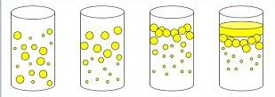
enkeltumættet (el. monoumættet): En fedtsyre eller et triglycerid der indeholder netop én dobbeltbinding i carbonkæden er enkeltumættet.
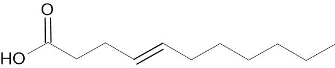
fedtsyre: En carboxylsyre med mindst 4 carbonatomer i kæden.
filtrering: En proces hvor man vha. et filter adskiller fast stof fra væske, fx sand fra vand.
flerumættet (el. polyumættet): En fedtsyre eller et triglycerid der indeholder to eller flere dobbeltbindinger i carbonkæden er flerumættet.
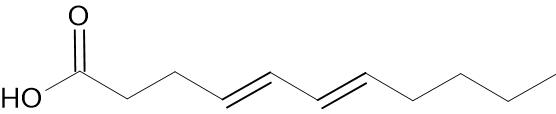
fældningsreaktion: En reaktion hvor to opløsninger af letopløselige ionforbindelser blandes, hvorved der dannes en ny ionforbindelse der er tungtopløselig og derfor udskilles som et bundfald.
Både natriumchlorid og sølv(1+)nitrat er letopløselige:
NaCl(s) → Na+(aq) + Cl-(aq)
AgNO3(s) → Ag+(aq) + NO3-(aq)
Når en opløsning af natriumchlorid og en opløsning af sølv(1+)nitrat blandes, dannes der tungtopløseligt sølv(1+)chlorid.
Det kan skrives med ionformler: Ag+(aq) + Cl-(aq) → AgCl(s),
eller med stofformler: AgNO3(aq) + NaCl(aq) → AgCl(s) + NaNO3(aq).
forbrænding: En kemisk reaktion hvor der indgår dioxygen (O2). Der udvikles varme. Når organiske stoffer der består af C, H og O forbrænder, dannes der carbondioxid og vand ved forbrændingen. Eks.: 2CH4O + 3O2 → 2CO2 + 4H2O.
glycerin: Det samme som glycerol.
glycerol (eller glycerin): Et almindelig brugt navn for det alkohol der har det systematiske navn propan-1,2,3-triol. Tyktflydende væske med sødlig smag.
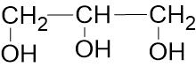
grundstof: Et kemisk stof der er opbygget af én slags atomer. Der findes 118 grundstoffer. Eksempler: sølv, kobber, hydrogen, oxygen (ilt). Grundstoffer kan groft deles op i metaller (fx jern og sølv) og ikkemetaller (fx hydrogen og nitrogen).
gruppe: Det periodiske system er inddelt i 18 lodrette kolonner der kaldes grupper. Grupperne kan deles ind i 8 hovedgrupper og 10 sidegrupper (også kaldet undergrupper). Der findes to måder at nummerere grupperne på. Efter den nye måde nummererer man grupperne fra 1 til 18 (fra venstre mod højre). Efter den gamle måde (der stadig er meget anvendt) nummereres de otte hovedgrupper med romertal fra I til VIII, mens sidegrupper nummereres med romertal efterfulgt af et a (fx VIa). De otte hovedgrupper er grupperne 1-2 og 13-18 (efter den nye nummereringsmåde).
hydron: Et andet ord for hydrogenion (H+).
hydrogenbinding: En type binding der dannes mellem molekyler. Bindingen dannes mellem et svagt positivt H-atom i et polært molekyle og et ledigt elektronpar på O, N eller F i et andet molekyle. Hydrogenbindinger er væsentlig svagere end elektronparbindinger (der binder atomerne sammen i et molekyle). Kemiske forbindelser der danner hydrogenbindinger har høje kogepunkter og er blandbare med vand. Vand er selv et eksempel på en kemisk forbindelse der danner hydrogenbindinger.
hærdning: En proces hvor der adderes dihydrogen (H2) til triglycerider med det formål at gøre triglyceridet fast ved stuetemperatur. Ved additon af dihydrogen til et umættet triglycerid fjernes der dobbeltbindinger i triglyceridet. Derved forøges triglycerides smeltepunkt, således at det går fra flydende til fast form ved stuetemperatur. Processen benyttes til fremstilling af plantemargarine ud fra flydende planteolie. På figuren er det det vist med en fri fedtsyre, i praksis foregår det med triglycerider.
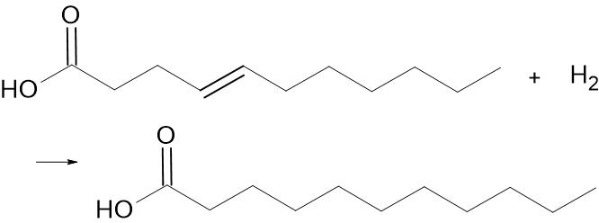
inddampning: Metode til indvinding af fast stof (fx salt) der er opløst i væske (typisk vand). Ved opvarmning fordamper væsken og det faste stof bliver tilbage.
indikator: Et stof hvis farve afhænger af det kemiske miljø. Eksempelvis afhænger syrebase-indikatorers farve af pH-værdien. Indikatorer benyttes bl.a. til titreringer.
ion: Et atom, eller en gruppe af atomer, der har optaget eller afgivet én eller flere elektroner og derfor har en elektrisk ladning. Ioner der består af ét atom kaldes simple ioner, ioner der består af flere atomer kaldes sammensatte ioner. Ved afgivelse af elektroner dannes der positive ioner (fx Na+, Mg2+, Al3+), ved optagelse af elektroner dannes der negative ioner (fx Cl-, O2-, P3-).
ionbinding: Binding der findes mellem de positive og negative ioner i en ionforbindelse.
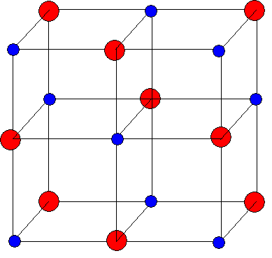
ionforbindelse (el. salt): En kemisk forbindelse der er opbygget af positive og negative ioner. Den positive ion er (næsten altid) et metal og den negative et ikkemetal. I stoffets formel, står den positive ion først. Eks.: NaCl består af Na+ og Cl-.
isomeri: To stoffer med samme molekylformel, men forskellig strukturformel er isomere. Eksempelvis har både propan-1-ol og propan-2-ol molekylformlen C3H8O, men OH-gruppen i de to stoffer er forskellig placeret.
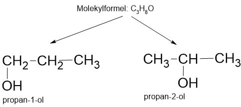
kemisk forbindelse: Et stof der er opbygget af to eller flere slags atomer. Fx HCl og H2O.
koefficient: De tal der sættes foran stofformlerne når man afstemmer reaktionsskemaer, kaldes for koefficienter. I reaktionsskemaet nedenfor er koefficienterne markeret med rødt. Hvis der ikke står et tal, er der et underforstået 1-tal. Fx er koefficienten for C4H10O i nedenstående reaktionsskema lig med 1.
C4H10O + 6O2 → 4CO2 + 5H2O.
ledigt elektronpar: Elektronpar i et atom der ikke indgår i en binding til et andet atom. Se også elektronprikformel. Kaldes også for et ikkebindende elektronpar. På engelsk hedder det et lonepair.
masse: Hvad en portion stof vejer. Kaldes i daglig tale for vægt (men masse er det korrekte ord i kemi og fysik). Måles i gram (g).
masseprocent: Angiver hvor mange procent massen af et stof udgør af totalmassen af en blanding. Hvis fx 25 g salt er blandet med 75 g sand, er salts masseprocent 25 % og sands masseprocent er 75 %.
mol: Et meget stort tal, nemlig 602.000.000.000.000.000.000.000 eller 6,02·1023.
molarmasse: Massen af ét mol af et stof. Måles i gram per mol (g/mol). Kan findes via det periodiske system når man kender stoffets formel.
molekyle: En enhed bestående at to eller flere atomer. Atomerne i molekylet kan være ens (fx H2) eller forskellige (fx CO2). Atomerne er bundet sammen vha. elektronparbindinger. Atomerne i molekyler er ikkemetaller.
molekylforbindelse: Et stof der består af molekyler, fx vand (H2O). Består af to ikkemetaller, fx CO2 hvor både C og O er ikkemetaller.
molekylformel: En formel der fortæller om et stofs kemiske sammensætning. Antallet af atomer i hvert molekyle er angivet, mens den nærmere strukturelle opbygning ikke er angivet. Fx er molekylformlen for ethanol C2H6O.
monoumættet: Det samme som enkeltumættet.
mættet: En fedtsyre eller et triglycerid hvor carbonkæden ikke indeholder dobbeltbindinger siges at være mættet.
neutron: En af de tre elementarpartikler atomet er opbygget af. Er elektrisk neutralt. Befinder sig i atomets kerne (sammen med protoner).
oktetregel (el. ædelgasregel): En regel der siger at atomer vil tilstræbe at få otte elektroner i yderste skal. Dette sker ved at indgå i kemiske forbindelser med andre atomer, hvorved der dannes molekyler eller ionforbindelser. Ædelgasserne (hovedgruppe 8 i det periodiske system) har allerede otte elektroner i yderste skal, og indgår derfor normalt ikke i kemiske forbindelser.
omega-3-fedtsyre: Fedtsyrer kaldes omega-3-fedtsyrer, såfremt der sidder en dobbeltbinding mellem 3. og 4.-sidste carbonatom i carbonkæden.
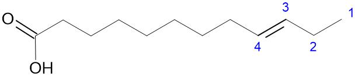
opløsning: En ensartet blanding af to eller flere stoffer, hvor det opløste stofs molekyler eller ioner er jævnt fordelt mellem opløsningsmidlets molekyler. Typiske eksempler kan være salt opløst i vand, sukker opløst i vand eller diiod opløst i benzin.
opløsningsreaktion: En kemisk reaktion hvor et fast stof opløses i væske. Det kunne typisk være en ionforbindelse (salt) i vand. Når ionforbindelser opløses i vand, adskilles de positive og de negative ioner fra hinanden. Dette kan skrives med et reaktionsskema: NaCl(s) → Na+(aq) + Cl-(aq).
organisk: Et kemisk stof der indeholder carbon (C). Kemiske stoffer der ikke indeholder carbon, kaldes for uorganiske stoffer.
oxidation: En reaktion hvor der afgives elektroner. Navnet er historisk, efter den moderne definition af oxidation indgår oxygen ikke nødvendigvis i reaktionen. Se redox.
Et eksempel på oxidation: Mg → Mg2+ + 2e- (et magnesiumatom afgiver to elektroner og bliver til en magnesiumion).
periodisk system: En tabel der viser en oversigt over de 118 kendte grundstoffer. Grundstofferne er inddelt i grupper (lodrette kolonner) og perioder (vandrette rækker).
pH: Et mål for koncentrationen af oxoniumioner (H3O+) i en sur eller basisk opløsning. pH-skalaen går fra 0 til 14, hvor 7 er neutralt. Vand er neutralt (pH=7,00).Ved lav pH er koncentrationen af oxoniumioner høj, ved høj pH er koncentrationen af oxoniumioner lav. Den præcise definition er: pH = -log([H3O+]).
polær: Et molekyle er polært, såfremt det har en positiv og en negativ ende. Denne ujævne fordeling af ladning i molekylet skyldes forskelle i atomernes elektronegativitet. Atomer med den største elektronegativitet trækker mest i de fælles elektroner i en elektronparbinding og bliver dermed svagt negative. Atomer med mindre elektronegativitet bliver tilsvarende svagt positive.
polyumættet: Det samme som flerumættet.
produkt: De stoffer der dannes ved en kemisk reaktion kaldes produkter. Produkter står til højre i et kemisk reaktionsskema.
CH4(g) + 2O2(g) → CO2(g) + 2H2O(g) (produkterne er markerede med rødt)
proton: En af de tre elementarpartikler atomet er opbygget af. Protonen er positiv ladet og befinder sig i atomets kerne. Antallet af protoner i et atom er lig med atomnummeret, fx er jern (Fe) atomnummer 26 og jernatomet har derfor 26 protoner i kernen.
reaktant: Udgangsstofferne i en kemisk reaktion kaldes for reaktanter. Reaktanter er de stoffer der står til venstre i et kemisk reaktionsskema.
CH4(g) + 2O2(g) → CO2(g) + 2H2O(g) (reaktanterne er markerede med rødt)
reaktion: En kemisk proces hvor nye stoffer dannes ud fra andre. Det kunne fx være dannelsen af carbondioxid og vand ud fra forbrænding af ethanol. En reaktion beskrives vha. et reaktionsskema.
reaktionsskema: Beskrivelse af en kemisk reaktion, idet formlerne for udgangsstofferne (reaktanterne) står på venstre side, og formlerne for de resulterende stoffer (produkterne) står på højre side af en pil, fx
2H2(g) + O2(g) → 2H2O(g).
redox: En kemisk reaktion hvor der overføres elektroner fra et atom til et andet. En redoxproces er summen af en oxidation og en reduktion.
Et eksempel på en redoxreaktion: 2Mg(s) + O2(g) → 2MgO(s). Elektroner afgives fra magnesium og optages af oxygen.
reduktion: En reaktion hvor der optages elektroner. Se redox.
Eksempel på reduktion: Cl- + e- → Cl (en chloridion optager en elektron og bliver til et chloratom).
rent stof: Et rent stof er et stof hvor de mindste dele er ens. Et eksempel er vand. Vand består af vandmolekyler der alle er ens.
salt: Det samme som ionforbindelse.
skalmodel: En model for hvordan elektronerne i et atom fordeler sig i skaller (baner) udenom atomets kerne. Skallen tættest på kernen (nr. 1) kan højest indeholde 2 elektroner, den næste (nr. 2) højest 8. Generelt kan der højest være 2n2 elektroner i en skal, hvor n er skallens nummer. Elektronerne fyldes i skallerne indefra (fra skal nr. 1) og udefter.
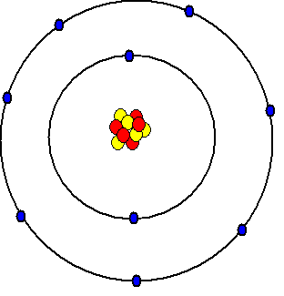
stofmængde: Antallet af atomer, molekyler eller formelenheder i enheden mol. Betegnes med bogstavet n.
stofmængdekoncentration: Et udtryk for hvor meget stof der er opløst i en opløsning. Angives som antallet af mol stof der er opløst per liter af opløsningen, dvs. enheden er mol/L. Hvis man fx opløser 0,20 mol natriumchlorid i vand, så opløsningen totalt fylder 0,50 L, svarer det til at der er 0,40 mol stof per liter opløsning, stofmængdekoncentrationen er altså 0,40 mol/L. Stofmængdekoncentration betegnes med bogstavet c. Med formler kan man skrive c = n/V, hvor n er stofmængden og V er volumen.
stregformel: Det samme som strukturformel.
strukturformel (eller stregformel): En formel der viser hvordan et molekyle strukturelt er bygget op. Hvert atom skrives med atomsymbolet (fx C for carbon) og hver elektronparbinding vises med en streg. Dobbeltbindinger vises med en dobbeltstreg (”lighedstegn”) og trippelbindinger med en tredobbelt streg.
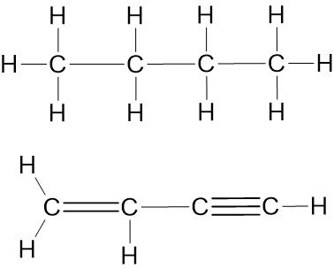
sur opløsning: En opløsning af syre i vand. pH-værdien er under 7. Koncentrationen af oxoniumioner (H3O+) er høj, koncentrationen af hydroxidioner (OH-) er lav.
syre: Et stof der kan afgive en eller flere hydrogenioner (H+), også kaldet hydroner. Når syrer reagerer med vand, dannes der oxoniumioner (H3O+).
Eksempel med saltsyre:
HCl(aq) + H2O(l) → Cl-(aq) + H3O+(aq).
tilstandsformer: Stoffer kan eksistere i forskellige tilstande: fast form, væske, gas. Endvidere kan stoffer være opløst i vand (eller andre opløsningsmidler). Tilstandsformen angives vha. en forkortelse i parentes efter stoffets formel. For fast stof bruges (s), for væske (l), for gas (g) og for vandig opløsning (aq). Eksempelvis betyder NaCl(aq) natriumchlorid opløst i vand, mens H2O(l) betyder vand på flydende form.
titrering: En eksperimentel metode til bestemmelse af stofmængden (eller stofmængdekoncentrationen) i en opløsning. Lad og sige, at vi har en opløsning af stoffet A der kan reagere med stoffet B: A + 2B→ C + 2D (fx H2SO4(aq) + 2NaOH(aq) → Na2SO4(aq) + 2H2O(l)). Opløsningen af A hældes i en kolbe. Fra en burette tilsættes en opløsning af B (med kendt koncentration). Endvidere skal der til opløsningen tilsættes en indikator der via et farveskift fortæller hvornår stofmængden af tilsat B er ækvivalent med stofmængden af A (se ækvivalente mængder). Stoffet med ukendt koncentration (A) kaldes for titranden. Stoffet i buretten med kendt koncentration (B) kaldes for titratoren.
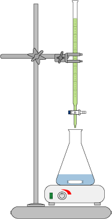
Efter forsøget skal vi kende:
Stofmængdekoncentration af titrator: cB.
Volumen af tilsat titrator: VB (aflæses på buretten når indikatoren har skiftet farve).
Volumen af titrand: VA (afmåles med måleglas).
Beregningen af stofmængdekoncentrationen af titranden (A) kan nu udføres vha. tre skridt:
1. Beregn stofmængden af tilsat titrator: nB = cB·VB.
2. Omsæt til stofmængden af titranden vha. reaktionsskemaet. I vores eksempel har vi reaktionsskemaet A + 2B → C + 2D, og vi kan se at stofmængden af A er den halve af stofmængden af B. Derfor har vi nA =0,5·nB.
3. Endelig kan vi beregne stofmængdekoncentrationen af titranden (A): cA = nA/VA.
triglycerid: Stof opbygget ud fra et molekyle glycerol (glycerin) og tre fedtsyremolekyler. Når glycerol og tre fedtsyremolekyler reagerer, dannes der ét molekyle triglycerid og tre molekyler vand. De tre fedtsyremolekyler kan være ens eller forskellige. Triglycerider udgør hovedbestanddelen af margarine, planteolie og animalsk fedt.
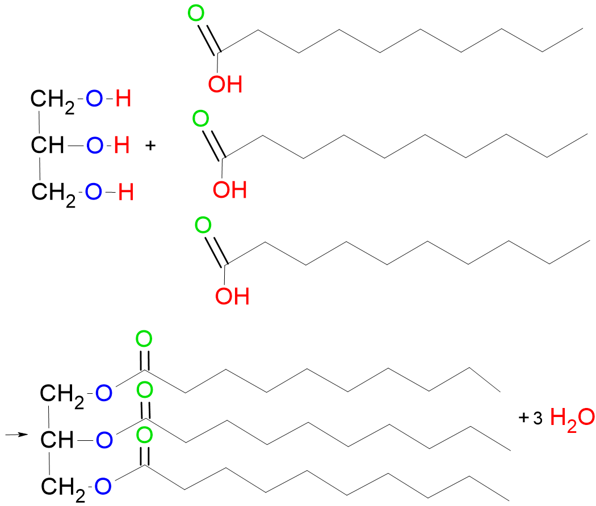
umættet: En fedtsyre eller et triglycerid hvor carbonkæden indeholder en eller flere dobbeltbindinger siges at være umættet. Hvis der er netop én dobbeltbinding, er stoffet enkeltumættet (monoumættet), hvis der er to eller flere dobbeltbindinger er stoffet flerumættet (polyumættet).
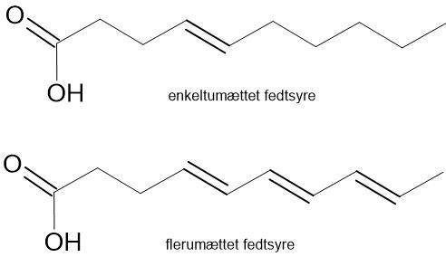
uorganisk: Et kemisk stof der ikke indeholder carbon (C). Eksempler er H2O og NH3. Kemiske stoffer der indeholder carbon, kaldes for organiske stoffer.
upolær: Det modsatte af polær. Et upolært molekyle har ikke en positiv og en negativ ende. Et molekyle er upolært, såfremt molekylets atomer har omtrentlig samme elektronegativitet (forskellen i elektronegativitet mellem de to atomer skal være mindre end 0,5).
volumen: Hvor meget en opløsning fylder (rumfang). Måles i liter (L) eller milliliter (mL). Betegnes med bogstavet V.
zigzagformel: En type strukturformel der benyttes til store organiske molekyler. Carbonkæden tegnes som en lang zigzag-streg, hvor hvert knæk eller endepunkt repræsenterer et carbonatom (C). Carbonatomer skrives derfor ikke direkte i zigzagformler. Hydrogenatomer (H) skrives ligeledes ikke. Andre atomer skrives direkte.
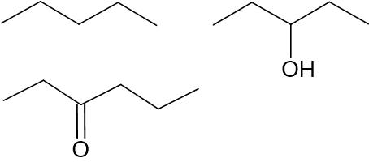
ædelgasregel: Det samme som oktetregel.
ækvivalente mængder: Hvis vi har reaktionsskemaet CH4(g) + 2O2(g) → CO2(g) + 2H2O(g), så vil 1 mol methan være ækvivalent med 2 mol dioxygen, 1 mol carbondioxid og 2 mol vand. 2 mol methan vil være ækvivalent med 4 mol dioxygen, 2 mol carbondioxid og 4 mol vand, osv.